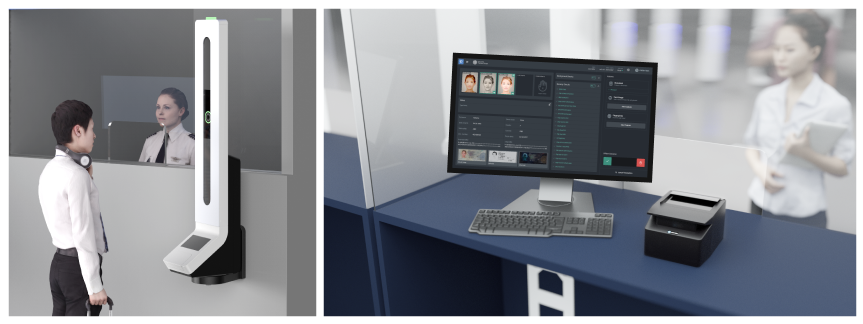
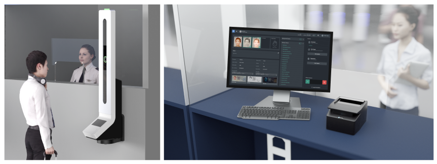
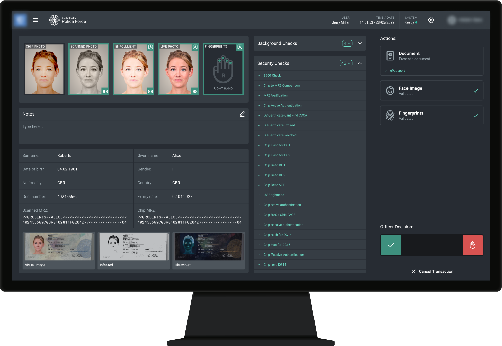
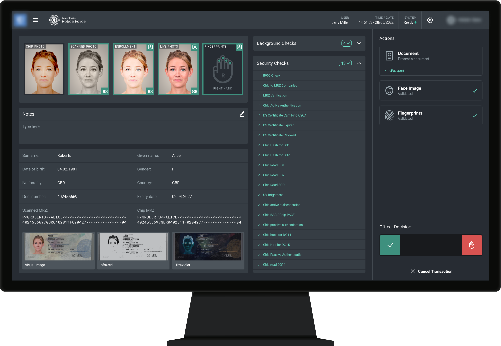

From the discovery and exploration to the delivery of a production-ready MVP for Manual Desk App, a desktop touch application for border force officers.

The European border regulations are about to change. All passengers will be required to register their faces on each entrance and exit of the Schengen zone. The border forces, however, are not equipped and there is no production-ready solution available in the market.
Border force officers need to capture and validate passengers' faces, passports, and fingerprints, so that they comply with the new regulations.
 

The solution includes this custom hardware, the Vdesk, with a camera, a fingerprint reader, and a screen on the passenger side. Inside the officer counter, there is a document scanner and this desktop touch application, the Manual Desk App, to control all those devices and display the passenger information.
Vision-box has a long history of building biometric e-gates, those in the airport where nationals put their passport, take a picture, and the doors open to let them enter or leave the country. However, for the first time, the company is building a solution for manual border control.
This is a huge opportunity for the company since all Schengen Member Countries will demand modernisation of air, land, and sea border infra-structures. And it also attends to a global demand for more safety and efficiency from this ever growing sector of air travels (7% growth of traffic per year).
As the most senior Product Designer of the team I was responsible for the discovery, exploration, and delivery of production-ready assets for the Manual Desk App and the Vdesk interfaces. However, in this case study I will be focusing on the Manual Desk Application only.
I was collaborating with Product and Project Managers, Technical Leads, Sales Manager, UX Researchers, and other Designers.
I started by facilitating workshops to gather the information from the stakeholders and creating a series of service blueprints.
The next step was to create a preliminary version to be validated. I took a screen from an existing similar application, the Inspector App, which the officers were already using to monitor the automatic gates, and included the features required by this new manual use case.
My intention was to move fast and cause less friction by adapting an interface that the officers were already used to.

The preliminary version was then tested with three real officers in a moderated usability test performed by an UX Researcher. The scenarios were simulated and there was no camera or passenger.

Further investigations with stakeholders revealed that:
At this point, I felt the need of a disruptive interface but it would involve many risks. Therefore we planned to produce two different versions and perform A/B tests.
I’ve made this disruptive approach (A), while another designer from the team produced a version more similar to the existing application (B).
The company’s priority changed and the project was paused for months. When it returned the decision was to skip the A/B testing and follow up with an MVP of the version A.
 

The MVP contains this dashboard screen with three big sections:


Occupying one half of the screen:

In the middle, we have these collapsable blocks of content showing all the verifications performed in the background.
Two blocks for now, but already thought to accommodate more soon.

We also have this third section on the right, the actions panel, as a guide to the officers regarding which action to perform and their overall status.
Besides this summary view, as a progressive disclosure strategy, I included three detailed views:
Where officers can see the passport image in full scale, and pinch it to enlarge even more. Also, the optical data is side-by-side with the chip data, thus officers may compare them.


Where officers can see the photos bigger, pinch to enlarge even more and compare them side-by-side.


Where officers can see the details of each finger, mark a finger or hand as not scannable, and switch hands.

Despite these alternate views, the actions panel is fixed, thus the officers always know where they are and may decide to allow or refuse the passenger at any moment.
My collaboration with the stakeholders were made via remote meetings, by keeping my board updated in Jira, creating branches on Figma files to separate ready-to-production from work-in-progress versions, and giving access for everyone to view and comment my work on every stage.
I collaborated with the Product Manager and the Product Owner to create the user stories and plan the roadmap. For each story I created a storyboard, that were discussed in design critique sessions or asynchronous since the design was always available for them to comment.


The storyboards gave support to the high-level conversations with the Project Managers that were going to implement a customised version of the product.
In the same Figma file developers can easily zoom in from the storyboards to the inspectable and documented templates, components, styles, and downloadable assets. I was regularly conducting Design QAs, creating issues and proposing solutions (including codepens).
I was constantly sharing the development of the application with my design colleagues during our scrum activities (daily, planning, and retrospective) and weekly design review sessions.
I don't have results to share yet since the app is under development. However, to measure the success I would look to the time and number of clicks to complete a process, the effectiveness in the unpredictable scenarios that these officers encounter in their day-to-day activities, and their perception of easiness, speed, and trust.